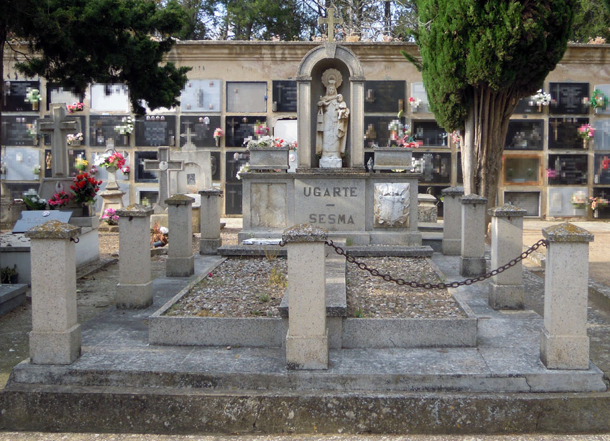

José Ugarte y Ugarte fue uno de los grandes propietarios de Calahorra a finales del siglo XIX y donó los terrenos para la construcción del cementerio de La Planilla, reservándose una pequeña parcela en su interior en la que está ubicada su sepultura[1]. Aunque el escultor Quirino Ruiz de Cenzano proyectó una capilla-panteón[2] para este espacio, la sepultura actual dista mucho de ser una capilla y cronología es muy posterior.

Es una sepultura de planta rectangular, un panteón monumental de grandes dimensiones. Consta de un basamento rectangular solado con baldosas, sobre el que se sitúa una breve cama de piedra artificial, cubierta con guijarros a modo de jardín y decorada con una gran cruz latina de cemento en relieve, dividiendo la cama en cuatro partes. El terreno de la sepultura estaba hasta 2012 delimitado por pilas de piedra unidas por pequeñas cadenas, actualmente desaparecidas.
La cabecera cuenta con un basamento avanzado en el centro, donde se encuentra la inscripción "Ugarte-Sesma". Los lados, ligeramente retranqueados, albergan los escudos de las familias Ugarte y Sesma. Sobre este basamento aparecen maceteros rectangulares a los lados y, en el centro, una hornacina en arco de medio punto sobre pilastras cajeadas, rematada con una cruz latina potenzada.
En la hornacina encontramos una imagen de buena calidad de la Virgen del Carmen en alabastro. La Virgen ha sido representada de pie, vestida con túnica que presenta cenefa central bordada y se ajusta al cuerpo mediante ceñidor. Sobre la túnica porta un manto y cubre la cabeza con una pequeña toca de orillo bordado. La imagen es excepcional porque es la única de este cementerio en la que María es portadora de una doble corona: corona real rematada con mundo y cruz y corona o nimbo rayado en el que alternan rayos flamígeros con otros, 12 en total, de terminación estrellada. Esta segunda corona hace referencia a la visión de la Virgen dada en el Apocalipsis de San Juan: “una mujer vestida de sol y la luna debajo de sus pies y sobre su cabeza una corona de doce estrellas”[3]. El cabello, suelto y ondulado, cae a ambos lados de un rostro dulce y de facciones redondeadas y suaves, con boca pequeña y carnosa, nariz recta y ojos entrecerrados. Porta una vara o rollo y un escapulario en la mano derecha y sujeta al Niño con la izquierda, en postura inestable. El Niño ha sido representado desnudo y sedente, con la bola del mundo en la mano izquierda y la derecha en actitud de bendecir. Es un niño de cabellos cortos y ensortijados, rostro sereno e idealizado.
A pesar de su indudable calidad, la imagen resulta fría, y contrasta vivamente el detalle y dulzura de los rostros, así como la calidad del escapulario o la tira bordada en la túnica de la Virgen, con el escaso detalle con el que se ha trabajado la parte inferior de la figura, de apariencia cilíndrica sobre una peana cúbica, o la inestable colocación del niño. A ello se suma la gran degradación que sufre debido a la erosión provocada por las inclemencias atmosféricas.
El escultor se inspiró directamente en la imagen del convento calagurritano, coronada canónicamente en 1957. Desde ese momento y hasta su reciente restauración, la imagen carmelita era portadora de la doble corona, de la misma forma que en la mano derecha sostenía, además del escapulario, una pequeña vara o rollo, tal y como muestran las estampas realizadas en 1958.
Los escudos de la cabecera están realizados igualmente en alabastro y presentan un deterioro importante. Ambos están firmados y fechados en el ángulo inferior izquierdo con la inscripción “Loperena 68”, lo que los identifica como obra de Antonio Loperena Eseverri (Arguedas, 1922 - Tudela, 2010), quién debió tallar la imagen mariana. Este pintor y escultor navarro realizó para Calahorra el Monumento a Quintiliano de la Glorieta del Ayuntamiento (1969) y el de Félix Rodríguez de La Fuente (1986)[4].
[1] LÓPEZ RODRÍGUEZ, P. Calahorra Levítica y Liberal. Cambio socioeconómico y caciquismo liberal en La Rioja Baja 1890-1923., p. 151. AMC. Cod. 2.1.4.13. Padrón de 1892; Sig. 441/3, fol. 18. Padrón de 1897; Sig. 442/1, fol. 16. Padrón de 1901; Sig. 442/3, s/f; calle Julio Cesar nº 7. Cod. 2.8.0.2. Escritura de cesión de terreno para el cementerio; Calahorra, 7 de noviembre de 1895. Leg. 1341/26. El terreno reservado se encontraba en las manzanas delimitadas por las tapias este y norte, la capilla y la calle de San Diego.
[2] Este escultor logroñés debió establecerse en Calahorra hacia 1895 y en 1901 sigue empadronado en Calahorra pero consta como residente en Cáseda (Navarra). En la segunda década del siglo XX ya estaba establecido en Logroño, en la calle Marqués de San Nicolás nº 123. Esta casa se corresponde con el actual nº 58 de la citada calle y la recibió como herencia de Eugenio Ruiz de Cenzano en 1904. AMC. Cod. 2.1.4.13. Padrón de 1897; Sig. 442/1, fol. 263 (calle Cabezo nº 3). Padrón de 1901; Sig. 442/3, s/f; calle dean Palacios nº 4. La Rioja, 7 de noviembre de 1897, 16 de noviembre de 1898, 21 de junio de 1900. Guía de La Rioja, p. 1.028. Anuario de la Vida Oficial, el comercio y la industria de la Provincia de Logroño, p. 53. Guía Regional: Aragón, Cataluña, Navarra, Rioja y provincias vascongadas, p. 789. La traza para el panteón Ugarte fue realizada en 1897-1898. AMC. Cod. 2.4.4.5. Carta de don José Ugarte al Ayuntamiento; Calahorra, 1 de abril de 1899. Leg. 669/11. ÁLVAREZ CLAVIJO, M.T.; SALAS FRANCO, M.P. Estudio Histórico-Artístico del Casco Antiguo de Logroño: Mercaderes, Barriocepo y Casa de la Virgen, p. 230-232.
[3] Apocalipsis 12-1.
[4] MURUZÁBAL DEL SOLAR, J.Mª. “Antonio Loperena: Escultura pública e imaginería religiosa en Navarra”, p. 163.